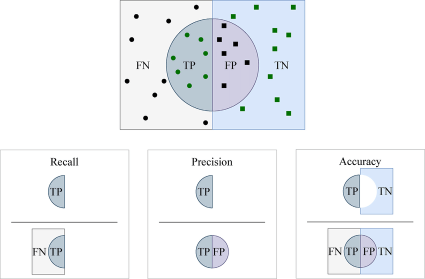
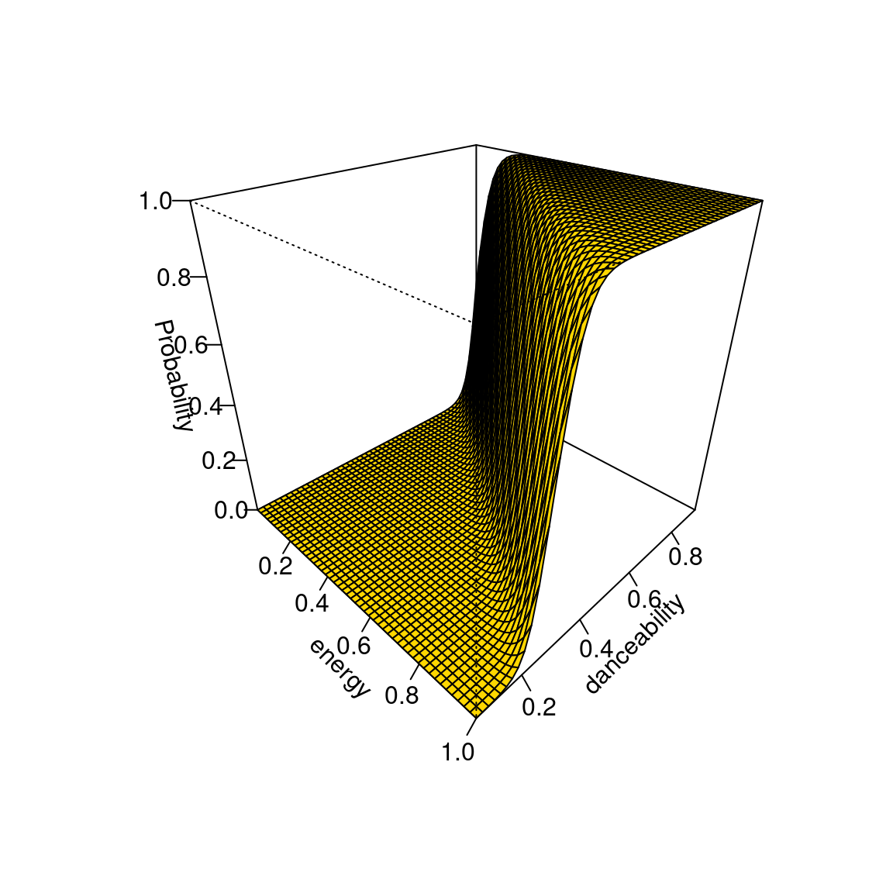
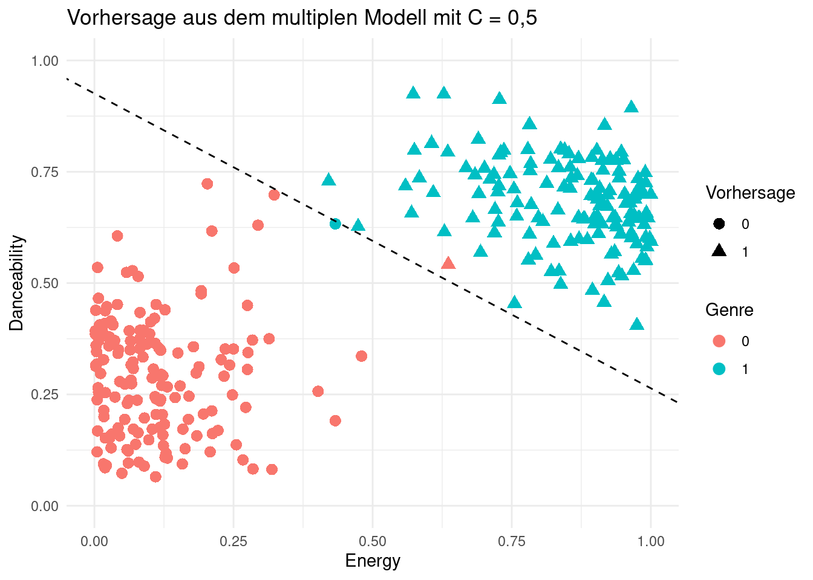

| Block | Gruppe D | Thema |
|---|---|---|
| 1 | 21.03.2024:09:00 – 10:30 | Organisation, Einleitung |
| 2 | 21.03.2024:10:45 – 12:15 | Datenbereitstellung: Data Warehousing |
| 3 | 28.03.2024:13:00 – 14:30 | Datentransformation |
| 4 | 28.03.2024:14:45 – 16:15 | Big Data und Data Lake |
| 5 | 02.04.2024:13:00 – 14:30 | Informationsgenerierung: Berichtsorientierte Analysen |
| 6 | 02.04.2024:14:45 – 16:15 | Advanced und Predictive Analytics: Grundlagen |
| 7 | 15.04.2024:13:00 – 14:30 | Advanced und Predictive Analytics: Klassifikation |
| 8 | 15.04.2024:14:45 – 16:15 | Advanced und Predictive Analytics: Klassifikation |
| 9 | 02.05.2024:13:00 – 14:30 | Restinhalte Klassifikation; Assoziationsanalyse; Probeklausur (30 Minuten) |
| 10 | 02.05.2024:14:45 – 16:15 | Besprechung Probeklausur; Evaluation; Fragen |
| - | 13.05.2024:13:00 – 14:30 | Klausur (60 Minuten) |
Business Intelligence & Data Science
Vorlesung 7
Der Plan für heute…
Vorlesung 7
- Quiz und kurzes Recap logistische Regression
- Modellgestützte Analysen
- Weitere Modellevaluation
- Multiple Logistische Regression
- Multinominale Logistische Regression
Ablauf
Aktualisierter Ablaufplan
Logistische Regression
Kurz-Recap
- Die logistische Regression ist ein Modell zur binären Klassifikation und erfordert die Umwandlung der abhängigen Variable in eine Dummy-Variable (0 und 1) wobei 1 die interessante Klasse darstellt
- Das Modell berechnet für jeden Datenpunkt eine Wahrscheinlichkeit, dass die Beobachtung zur interessanten Klasse gehört
- Anhand eines Cut-Off Points \(C\) wird entschieden, ob die Beobachtung zur interessanten Klasse gehört
- Anschließend wird das Modell mit Konfusionsmatrix und Accuracy evaluiert, die einfachste und intuitivste Metrik ist, die aber Nachteile hat
- Precision, Recall und F1-Score beheben die Schwächen von Accuracy und werden insbesondere bei unbalancierten Datensätzen verwendet oder wenn FP und FN stark unterschiedliche Kosten haben
Logistische Regression
Kurz-Recap
- Die beiden folgenden Grafiken sind im Kontext der binären Klassifikation mit der logistischen Regression besonders wichtig:
Modellevaluation
Precision
- Andere Metriken beheben die Schwächen der Accuracy
- Precision oder Präzision gibt an, wie viele der vom Klassifikator als positiv identifizierten Fälle tatsächlich positiv sind und entspricht dem Anteil der tatsächlich positiven Fälle an der Menge aller als positiv klassifizierten Fälle
\[\text{Precision} = \frac{\text{TP}}{\text{TP + FP}}\]
- Welcher Anteil der positiven Identifikationen war tatsächlich korrekt? Oder: Wenn das Modell einen Datenpunkt positiv klassifiziert, wie wahrscheinlich ist es, dass diese Klassifikation richtig ist?
- Eine hohe Precision bedeutet also, dass der Klassifikator nur wenige irrelevante Fälle als relevant einstuft und ein Klassifikator mit einer Precision von 1,0 liefert keine FP.
Modellevaluation
Recall
- Recall hingegen gibt an, wie viele der tatsächlich positiven Fälle vom Klassifikator als positiv bzw. relevant erkannt wurden:
\[\text{Recall} = \frac{\text{TP}}{\text{TP + FN}}\]
- Ein hoher Recall-Wert bedeutet, dass der Klassifikator viele relevante Fälle erkennt und beantwortet die Frage, welcher Anteil der positiven Ergebnisse richtig identifiziert wurde.
- Wie wahrscheinlich ist es, dass das Modell einen positiven Datenpunkt erkennt?
- Auch häufig als Sensitivität oder True Positive Rate bezeichnet
Modellevaluation
Precision und Recall

Modellevaluation
Precision und Recall für den Spam-Filter
- Um Precision und Recall bei unausgewogenen Datensätzen zu illustrieren, betrachten wir erneut den Spam-Filter
- Für Precision erhalten wir
\[\text{Precision} = \frac{\text{1}}{\text{1 + 0}} = 1\]
- Für Recall ergibt sich
\[\text{Recall} = \frac{\text{1}}{\text{1 + 99}} = 0,01.\]
| Tatsächlich Positiv | Tatsächlich Negativ | Summe Vorhersage | |
|---|---|---|---|
| Vorhergesagt Positiv | 1 | 0 | 1 |
| Vorhergesagt Negativ | 99 | 900 | 999 |
| Summe Tatsächlich | 100 | 900 | 1000 |
- Wenn das Modell eine Mail als Spam klassifiziert, ist diese Prognose zu 100% korrekt
- Das Modell erkennt aber nur 1% der tatsächlichen Spam-Mails.
Modellevaluation
Precision und Recall für den Spam-Filter
- Welches Maß ist nun das Richtige?
- Wenn ein balancierter Datensatz vorliegt, kann Accuracy bedenkenlos verwendet werden, um das Modell zu evaluieren
- Wenn wir sicher sein wollen, dass eine positive Vorhersage korrekt ist, dann ist Precision die angemessene Evaluationsmetrik. Dies ist oft der Fall, wenn FP mit höheren Kosten verbunden sind, als FN.
- Wenn es wichtig ist, so viele positive Fälle wie möglich zu identifizieren, sollte ein Modell mit hohem Recall verwendet werden. In diesem Fall sind die Kosten von FN besonders hoch, sodass es besser ist, einige Fälle fälschlicherweise negativ zu klassifizieren, als dass uns tatsächlich positive Fälle durch die Lappen gehen
Modellevaluation
F1-Score
- Oft sind Kosten und Nutzen von FP und FN Klassifikationen nicht eindeutig
- Der F1 Score kompensiert die Nachteile der Accuracy bei unbalancierten Datensätzen zu kompensieren und legt gleichzeitig einen ausgewogenen Fokus auf Precision und Recall:
\[ F1 = 2 \cdot \frac{\text{Precision} \cdot \text{Recall}}{\text{Precision} + \text{Recall}} \]
- F1 ist das harmonische Mittel von Precision und Recall und liegt zwischen 0 und 1
Modellevaluation
F1-Score
- Im Spam Beispiel:
\[ F1 = 2 \cdot \frac{\text{1} \cdot \text{0,01}}{\text{1} + \text{0,01}}= 0,0198 \]
- Dieser Wert ist deutlich niedriger, als uns die 90,1% Accuracy zunächst suggerieren.
- Trotzdem ist das Beispielmodell nahezu nutzlos, wie anhand des niedrigen F1-Scores erkennbar wird.
Modellevaluation
Abschließende Bemerkungen
- Bei einem balancierten Datensatz und gleicher Gewichtung von FP und FN ist die Accuracy die einfachste und intuitivste Metrik
- Bei unbalancierten Datensätzen sollten Precision, Recall und F1-Score verwendet werden
- Wenn FP höhere Kosten haben, dann sollte Precision im Fokus stehen
- Wenn FN höhere haben, dann sollte Recall im Fokus stehen
- Der F1-Score ist besonders nützlich, wenn Precision und Recall gleiche Gewichtung haben
Modellevaluation
Kosten von FP und FN
Die meisten Klassifikationsmethoden basieren auf der Annahme, dass FP und FN gleich problematisch sind
In praktischen Szenarios ist dies jedoch selten der Fall, Beispiel:
Betrugserkennung: Eine Haftpflichtversicherung prüft Schadensmeldungen mit ML. Das Modell soll den Schaden automatisch abwickelnd und entweder als “Zahlung” oder “Keine Zahlung” klassifizieren, je nachdem ob ein Betrugsversuch vorliegt
Fragen:
- Was ist die positive (interessante) Klasse aus Sicht der Versicherung?
- Welche Fälle sind dann FN und FP?
- Welche Fehlklassifikation ist teurer? Welches Maß sollte für das Modell maximiert werden?
Modellevaluation
Tauziehen zwischen Precision und Recall
- Precision und Recall sind in binären Klassifikationsmodellen oft invers proportional, eine Erhöhung von Precision führt zu einer Verringerung von Recall (und umgekehrt)
- Dieses Tauziehen kann durch die Anpassung des Cut-Off Points \(C\) beeinflusst werden
- Zur Illustration noch einmal zurück zur interaktiven Visualisierung:
- Fragen:
- Was passiert mit Precision und Recall, wenn \(C\) ansteigt (sinkt)?
- Für welche Werte von \(C\) erhalten wir maximale Precision und Recall?
Modellevaluation
Tauziehen zwischen Precision und Recall
Logistische Regression
Multiple Logistische Regression
- Bisher haben wir nur eine unabhängige Variable, Energy, betrachtet
- Da die Aufteilung jedoch nicht perfekt war, ist es sinnvoll, weitere Features zu verwenden, bspw. Danceability
- Zur Identifikation geeigneter Variablen lassen sich erneut Box-Plots oder Violin-Plots verwenden
- Zur Erinnerung: Auch Danceability scheint geeignet, um zwischen EDM und Klassik zu unterscheiden

Logistische Regression
Multiple Logistische Regression
- Bei der Hinzunahme mehrerer Variablen ist neben der Korrelation mit der abhängigen Variable auch die Korrelation zwischen den unabhängigen Variablen zu beachten
- Bei hoher positiver Korrelation zwischen den Variablen ist es möglich, dass die Hinzunahme dieser Variablen zum Modell keinen zusätzlichen Informationsgewinn liefert
- Auch besteht das Risiko der Multikollinearität, die zu instabilen Koeffizienten und einer schlechten Modellperformance führen kann
- Die Korrelation zwischen Danceability und Energy beträgt 0,8, ist also hoch, aber noch nicht bedenklich
Logistische Regression
Multiple Logistische Regression
- Bei zwei unabhängigen Variablen lässt sich der Zusammenhang zwischen den Variablen und der abhängigen Variable nach wie vor grafisch darstellen, diesmal als Scatter Plot
Logistische Regression
Multiple Logistische Regression
- Allgemein hat das logistische Modell mit mehreren unabhängigen Variablen die Form:
\[ P(y = 1|X) = \frac{ e^{(\beta_0 + \beta_1 \cdot X_1 + \beta_2 \cdot X_2 + \ldots + \beta_P \cdot X_P)}}{1 + e^{(\beta_0 + \beta_1 \cdot X_1 + \beta_2 \cdot X_2 + \ldots + \beta_P \cdot X_P)}} \]
- Mit den beiden Variablen Energy und Danceability erhalten wir folgendes Modell:
\[ P(EDM = 1|\text{Energy, Danceability}) = \\ \frac{ e^{(\beta_0 + \beta_1 \cdot \text{Energy} + \beta_2 \cdot \text{Danceability})}}{1 + e^{(\beta_0 + \beta_1 \cdot \text{Energy} + \beta_2 \cdot \text{Danceability})}} \]
Logistische Regression
Multiple Logistische Regression
- Die Koeffizienten für die unabhängigen Variablen sind:
| term | estimate |
|---|---|
| (Intercept) | -38.1001 |
| energy | 27.2445 |
| danceability | 41.1560 |
- Auch wenn die Interpretation der Koeffizienten bei Klassifikation weniger wichtig ist, zwei Anmerkungen zur Interpretation:
- Da der Zusammenhang zwischen den unabhängigen Variablen und der abhängigen Variable nicht linear ist, können wir die Koeffizienten nicht direkt interpretieren wie bei der linearen Regression
- Die Vorzeichen der Koeffizienten geben jedoch an, ob die unabhängige Variable positive oder negative Auswirkungen auf die abhängige Variable hat
Logistische Regressoin
Multiple Logistische Regression
- Grafisch:

Logistische Regression
Multiple Logistische Regression
- Mit dem Scatter Plot lassen sich die Vorhersagen des Modells visualisieren und evaluieren
- Auch für das Modell mit mehreren unabhängigen Variablen benötigen wir einen Cut-Off Point \(C\), um die Vorhersagen in Klassen zu unterteilen
- Die gestrichelte Linie ist die Decision Boundary für C = 0.5, also die Linie, auf der die Wahrscheinlichkeit für beide Klassen gleich 0,5 ist

Logistische Regression
Multiple Logistische Regression
- Für das Modell mit zwei Variablen und den Wert \(C\) = 0.5 erhalten wir die Konfusionsmatrix auf der rechten Seite.
- Accuracy, Precision, Recall und F1-Score sind:
| Metric | Value |
|---|---|
| accuracy | 0.9933 |
| recall | 0.9930 |
| precision | 0.9930 |
| f_meas | 0.9930 |

Logistische Regression
Multiple Logistische Regression
- Um die Performance des Modells systematisch zu optimieren, können wir erneut den Cut-Off Point \(C\) anpassen
- Statt Trial & Error ist es sinnvoll, Precision und Recall für verschiedene Werte von \(C\) zu berechnen und zu visualisieren
Logistische Regression
Zusammenfassung binäre Klassifikation
- Die binäre Klassifikation erfordert zunächst die Umwandlung der abhängigen Variable in eine Dummy-Variable, kodiert mit 0 und 1
- Zur Vereinfachung der Interpretation wird die interessante Klasse als 1 kodiert
- Das Modell berechnet für jeden Datenpunkt eine Wahrscheinlichkeit, dass die Beobachtung zur interessanten Klasse gehört
- Anhand eines Cut-Off Points \(C\) wird entschieden, ob die Beobachtung zur interessanten Klasse gehört
- Die Wahl der Evaluationsmetrik hängt von den Kosten von FP und FN und der Klassenungleichgewichtung ab
- Konfusionsmatrix, Accuracy, Precision, Recall und F1-Score sind gängige Metriken zur Modellbewertung
Multinominale Logistische Regression
Erweiterung auf mehrere Klassen
- Auch bei mehreren unabhängigen Variablen bleibt die logistische Regression ein binäres Modell
- Zur Erweiterung auf \(K>2\) Klassen wird die multinomiale logistische Regression verwendet, bei der zunächst eine Referenz- oder Baseline-Klasse festgelegt wird
- Zur Schätzung der Koeffizienten werden anschließend alle \(K-1\) Klassen paarweise separat gegen die Referenzklasse regressiert
- Anschließend lassen sich die Klassenzugehörigkeiten ähnlich wie im binären Modell vorhersagen
Logistische Regression
Mehrklassen-Klassifikation
- Für die Klassen \(k = 1, ..., K-1\) geschieht dies mit
\[ p(y_i = k|X = x) = \frac{e^{\beta_{k0} + \beta_{k1}x_1 + ... + \beta_{kp}x_p}}{1+\sum_{l=1}^{K-1} e^{\beta_{l0} + \beta_{l1}x_1 + ... + \beta_{lp}x_p} } \]
- und für die Referenzklasse \(K\) mit
\[ p(y_i = k|X = x) = \frac{1}{1+\sum_{l=1}^{K-1} e^{\beta_{l0} + \beta_{l1}x_1 + ... + \beta_{lp}x_p} } \]
- Dabei sind \(\beta_{k0}, ..., \beta_{kp}\) die Koeffizienten für die Klasse \(k\) und \(x_1, ..., x_p\) die unabhängigen Variablen
Multinominale Logistische Regression
Neue Daten von Tofispy
- Tofispy hat uns neue Daten zur Verfügung gestellt:
- Neben Klassik und EDM ist jetzt auch Hip-Hop enthalten
- Nach wie vor haben wir die beiden Variablen Energy und Danceability zur Verfügung
- Erneut teilen wir die Daten in Trainings- und Testdaten auf
- Diesmal verwenden wir 70% der Daten für das Training und 30% für das Testen
- Die Bewertung des Modells erfolgt dann anhand der Testdaten
Multinominale Logistische Regression
Ergebnisse
- Für das multinominale Modell erhalten wir jeweils Koeffizienten für \(K-1\) Klassen, bis auf die Referenzklasse \(K\)
- Für das Beispiel mit den drei Genres Klassik, EDM und Hip-Hop erhalten wir folgende Koeffizienten
| Class | Variable | Coefficient |
|---|---|---|
| Hip-Hop | (Intercept) | 5.1263 |
| Hip-Hop | energy | -9.7410 |
| Hip-Hop | danceability | 3.2574 |
| Klassik | (Intercept) | 23.7448 |
| Klassik | energy | -30.5953 |
| Klassik | danceability | -15.4205 |
Multinominale Logistische Regression
Prognose aus dem multinominalen Modell
- Die Prognose für die jeweilligen Klassen erfolgt erneut durch einsetzen der Koeffizienten in die logistische Funktion
- Für Hip-Hop erhalten wir beispielsweise
\[ \operatorname{\widehat{P}(Hip-Hop|\text{Energy, Dance})} = \\ \frac{e^{5.13 -9.74 \cdot \text{Energy} + 3.26 \cdot \text{Dance}}}{1 + e^{5.13 -9.74 \cdot \text{Energy} + 3.26 \cdot \text{Dance}} + e^{23.74 -30.6 \cdot \text{Energy} -15.42 \cdot \text{Dance}}} \]
- Und für die Referenzklasse EDM:
\[ \operatorname{\widehat{P}(EDM|\text{Energy, Dance)}} = \\ \frac{1}{1 + e^{5.13 -9.74 \cdot \text{Energy} + 3.26 \cdot \text{Dance}} + e^{23.74 -30.6 \cdot \text{Energy} -15.42 \cdot \text{Dance}}} \]
Multinominale Logistische Regression
Wahrscheinlichkeit und Klassenzugehörigkeit
- Auch das Modell der multinomialen logistischen Regression gibt für jede Klasse eine Wahrscheinlichkeit aus
- Anders als im binären Modell wird nicht nur die Wahrscheinlichkeit für eine Klasse ausgegeben, sondern für alle Klassen
- Die Klassenzugehörigkeit wird dann anhand der höchsten Wahrscheinlichkeit bestimmt, ein Cut-Off Point ist nicht notwendig
| track.artist | track.name | category | p_EDM | p_Hip-Hop | p_Klassik |
|---|---|---|---|---|---|
| Euggy | Samaria | EDM | 0.8015 | 0.1985 | 0.0000 |
| Bklava | Make It Work | EDM | 0.8665 | 0.1335 | 0.0000 |
| OG Keemo | OKAY! | Hip-Hop | 0.1855 | 0.8145 | 0.0000 |
| Axel N. | Black Swan | EDM | 0.6489 | 0.3511 | 0.0000 |
| Claude Debussy | Préludes - Book 2, L.123: 11. Les tierces alternées | Klassik | 0.0000 | 0.0000 | 1.0000 |
| Dizzy | Tipsy | Hip-Hop | 0.1179 | 0.8796 | 0.0025 |
| Twista | Overnight Celebrity | Hip-Hop | 0.4729 | 0.5271 | 0.0000 |
| Digital Underground | The Humpty Dance | Hip-Hop | 0.2642 | 0.7358 | 0.0000 |
| Elliott Jack Sansom | Papa, Can You Hear Me? | Klassik | 0.0000 | 0.0000 | 1.0000 |
| Colin Stetson | Peaceful Here Now | Klassik | 0.0000 | 0.0005 | 0.9994 |
Multinominale Logistische Regression
Prognose aus dem multinominalen Modell
- Da die händische Berechnung viel zu aufwendig ist, hier ein Beispiel für 10 ausgewählte Songs:
| pred_class | category | p_EDM | p_Hip-Hop | p_Klassik | track.name | track.artist | energy | danceability |
|---|---|---|---|---|---|---|---|---|
| EDM | EDM | 0.8015 | 0.1985 | 0.0000 | Samaria | Euggy | 0.9080 | 0.713 |
| EDM | EDM | 0.8665 | 0.1335 | 0.0000 | Make It Work | Bklava | 0.9540 | 0.705 |
| Hip-Hop | Hip-Hop | 0.1855 | 0.8145 | 0.0000 | OKAY! | OG Keemo | 0.6850 | 0.929 |
| EDM | EDM | 0.6489 | 0.3511 | 0.0000 | Black Swan | Axel N. | 0.8070 | 0.651 |
| Klassik | Klassik | 0.0000 | 0.0000 | 1.0000 | Préludes - Book 2, L.123: 11. Les tierces alternées | Claude Debussy | 0.0633 | 0.279 |
| Hip-Hop | Hip-Hop | 0.1179 | 0.8796 | 0.0025 | Tipsy | Dizzy | 0.5520 | 0.694 |
| Hip-Hop | Hip-Hop | 0.4729 | 0.5271 | 0.0000 | Overnight Celebrity | Twista | 0.7920 | 0.828 |
| Hip-Hop | Hip-Hop | 0.2642 | 0.7358 | 0.0000 | The Humpty Dance | Digital Underground | 0.6930 | 0.813 |
| Klassik | Klassik | 0.0000 | 0.0000 | 1.0000 | Papa, Can You Hear Me? | Elliott Jack Sansom | 0.0128 | 0.452 |
| Klassik | Klassik | 0.0000 | 0.0005 | 0.9994 | Peaceful Here Now | Colin Stetson | 0.3170 | 0.241 |
Multinominale Logistische Regression
Evaluationsmetriken
- Die Evaluationsmetriken für die multinominale logistische Regression sind analog zum binären Modell, Accuracy, Precision, Recall und F1-Score können auch hier verwendet werden
- Auch die Konfusionsmatrix ist ein geeignetes Mittel zur Modellbewertung, umfasst nun aber alle Klassen und nicht nur vier Felder
- Accuracy entspricht dann nach wie vor der Summe aller richtig klassifizierten Fälle geteilt durch die Gesamtanzahl der Fälle
- Andere Metriken können entweder für jede Klasse einzeln berechnet oder gemittelt werden, um ein Gesamtbild der Modellperformance zu erhalten
Multinominale Logistische Regression
Evaluationsmetriken
- Bei der Aggregation wird häufig Macro-Averaging verwendet, bei dem der gleichgewichtete Durchschnitt über alle Klassen berechnet wird
- Zum Beispiel für Precision ergibt sich bei Macro-Averaging:
\[ Precision_{\text{macro}} = \frac{1}{K} \sum_{k=1}^{K} Precision_k \]
- Wobei \(K\) die Anzahl der Klassen ist
- Analog für Recall möglich
Multinominale Logistische Regression
Evaluationsmetriken
- Die Konfusionsmatrix für das Modell mit drei Klassen ist auf der rechten Seite dargestellt
- Im Durchschnitt über alle Klassen erhalten wir die folgenden Metriken:
| Metric | Value |
|---|---|
| accuracy | 0.8478 |
| recall | 0.8454 |
| precision | 0.8479 |
| f_meas | 0.8464 |

Multinominale Logistische Regression
Evaluationsmetriken
- Die Performance des Modells weicht zwischen den Klassen oft ab, häufig auch in einer Klassenungleichgewichtung begründet
- Aus diesem Grund ist es manchmal sinnvoll, die Metriken für jede Klasse einzeln zu betrachten
- Für Precision:
\[ Precision_{\text{k}} = \frac{TP_{\text{k}}}{TP_{\text{k}} + FP_{\text{k}}} = \frac{TP_{\text{k}}}{\text{# vorhergesagte Klasse k}} \]
- und für Recall:
\[ Recall_{\text{k}} = \frac{TP_{\text{k}}}{TP_{\text{k}} + FN_{\text{k}}} = \frac{TP_{\text{k}}}{\text{# tatsächliche Klasse k}} \]
Multinominale Logistische Regression
Aufgabe Evaluationsmetriken pro Klasse
- Gegeben ist die Konfusionsmatrix auf der rechten Seite
- Fragen:
- Welche Klasse hat die höchste Precision?
- Wie hoch ist der Recall für das Genre Hip-Hop?
Multinominale Logistische Regression
Lösung Evaluationsmetriken pro Klasse
- Precsion:
- EDM = 363/(363+109+0) = 76.91%
- Hip-Hop = 479/614 = 78.01%
- Klassik = 534/537 = 99.44%
- Recall:
- EDM 363/(363+126+1) = 74.08%
- Hip-Hop = 479/590 = 81.19%
- Klassik = 534/543 = 98.34%
Multinominale Logistische Regression
Vergleich Aggregation vs. Einzelmetriken
- Macro-Averaging
- Einfach interpretierbar, Reduktion auf eine Zahl
- Sinnvoll wenn alle Klassen gleich wichtig sind oder Datensatz ausgewogen
- Kann schlechte Performance in kleinen Klassen verbergen
- Berechnung pro Klasse
- Wenn nur bestimmte Klassen interessant sind kann man gezielt evaluieren
- Auch bei unbalancierten Datensätzen sinnvoll, um die Performance kleiner Klassen hervorzuheben
- Kann zu unübersichtlichen Ergebnissen führen, wenn viele Klassen vorhanden sind
- Da wir vornehmlich balancierte Klassen betrachten, ist Macro-Averaging für unsere Zwecke ausreichend
Quellen
Business Intelligence & Data Science, SoSe 2024
James, Gareth, Daniela Witten, Trevor Hastie, und Robert Tibshirani. 2021. An Introduction to Statistical Learning: with Applications in R. Second edition. Springer texts in statistics. New York NY: Springer. https://doi.org/10.1007/978-1-0716-1418-1.
Maleki, Farhad, Katie Ovens, Keyhan Najafian, Behzad Forghani, Caroline Md, und Reza Forghani. 2020. „Overview of Machine Learning Part 1“. Neuroimaging Clinics of North America 30 (November): e17–32. https://doi.org/10.1016/j.nic.2020.08.007.
Shi, Feng, Juanzi Li, Jie Tang, Guotong Xie, und Hanyu Li. 2009. „Actively Learning Ontology Matching via User Interaction“. In, 5823:585–600. https://doi.org/10.1007/978-3-642-04930-9_37.